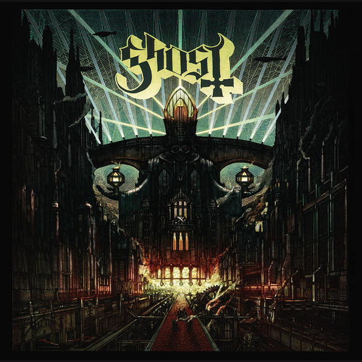

Ghost's third studio album, the follow up to Infestissumam, Meliora was released on August 21, 2015. In an advertisement for the album that aired May 28 on VH1 Classic, it was announced that Papa Emeritus II was "fired" and that his successor Papa Emeritus III is his younger brother by a full three months
Songs on the album
- Spirit
- From the pinnacle to the pit
- Cirice
- Spöksonat
- Mummy Dust
- Majesty
- Devils Church
- Absolution
- Deus in Absentia
- He is